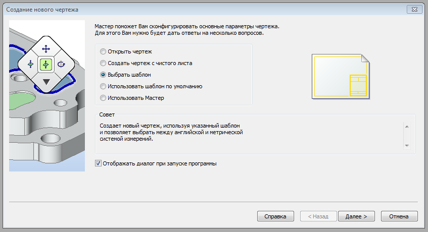
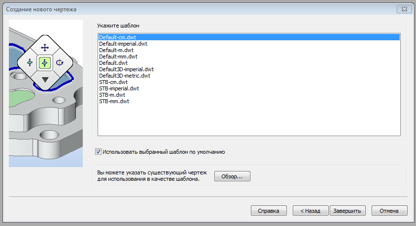
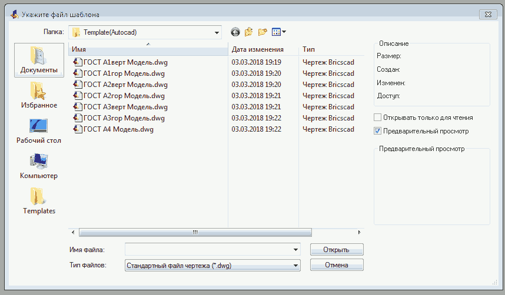
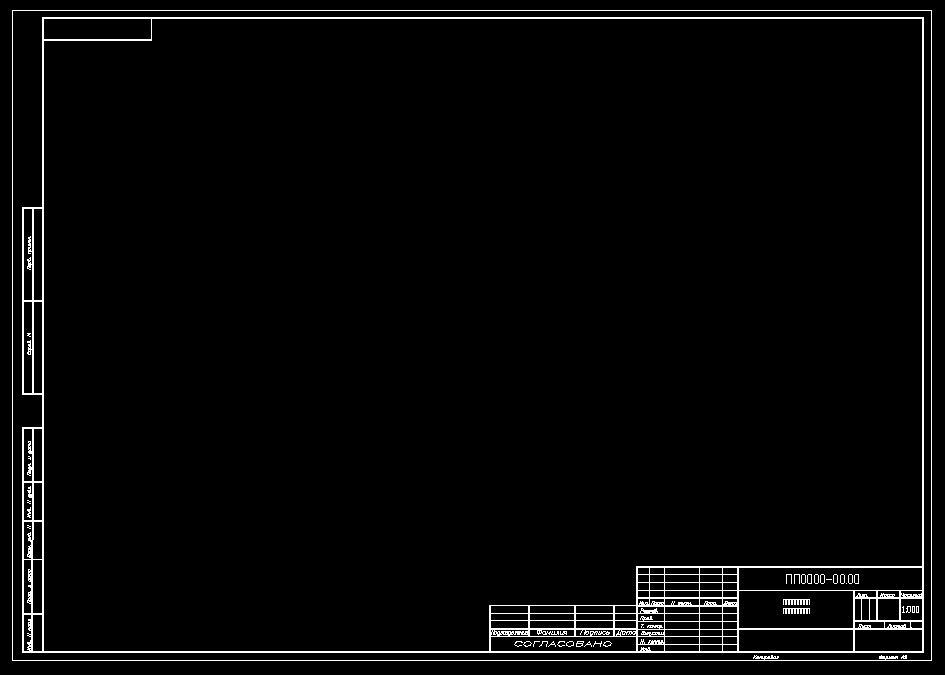

Сейчас и в дальнейшем:
все действия производятся левой кнопкой мыши, если не указано особо
При запуске программы BricsCAD появится окно для выбора шаблона чертежа
Нажмите кнопку "Далее"

Нажмите кнопку "Обзор" для выбора папки, куда вы поместили шаблоны чертежей
Готовые шаблоны форматов по ЕСКД можно скопировать здесь и перенести в новую папку, например с именем "Template(AutoCAD)"

Выберите нужный шаблон и нажмите кнопку "Открыть"

У Вас откроется новый чертёж, с которым можно начинать работать
